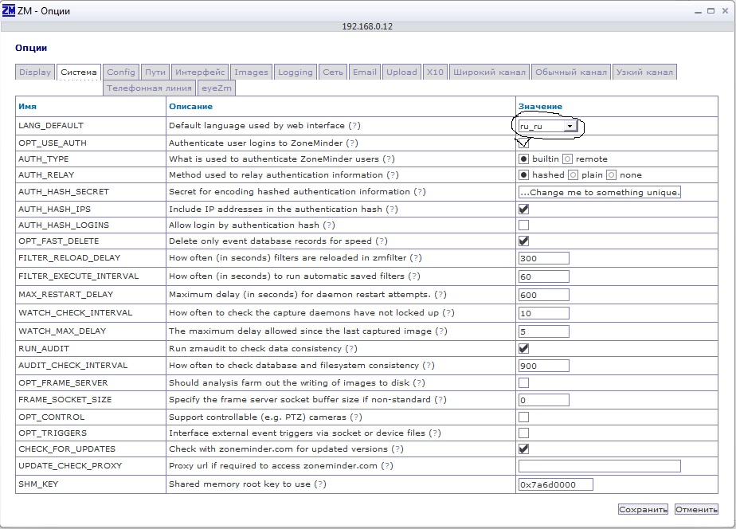

Установка ZoneMinder 1.25.0 будет осуществеленна на Ubuntu server 12.04 x64.
У меня 4 ip камеры 2 Dlink 2 Beward. Идея такая: поставить видеорегистратор Zoneminder и подключиться к камерам по RTSP.
Сервер Ubuntu 12.04 x64 я уже установил. При установке можно диск разбить тоесть для /usr можно создать отдельно раздел, так как ZoneMinder будет стоять в этом каталоге и хранить всё в этом каталоге.
Так же при установке ОС нужно поставить сервисы LAMP. Ну или потом установить все компоненты веб сервера отдельно.
Игрался, пробывал поставить ZoneMinder на Zend-server у меня не получилось.
После того когда сервер будет готов приступаю к установке ZoneMinder.
Вхожу под root и всё буду делать из под него:
$ sudo su
Обновляю пакеты:
# apt-get update
Обновляю все ПО до более новой версии:
# apt-get upgrade
# apt-get dist-upgrade
Когда обновление закончится приступим к установке ZoneMinder и компонента H.264
# apt-get install zoneminder x264
Далее редактируем скрипт Zoneminder, т.к. он не запускается автоматом при загрузке
# nano /etc/init.d/zoneminder
Вставляем в документе перед строкой «zmfix -a», вот такую — sleep 15Ctrl+o Enter to save
Сохраняем документ
Делаем символьную ссылочку:
# ln -s /etc/zm/apache.conf /etc/apache2/conf.d/zoneminder.conf
Перезагружаем веб-сервер:
# /etc/init.d/apache2 restart
Добавляем пользователя от которого будут происходить манипуляции с видео
# adduser www-data video
Устанавливаем cambozola для поддержки воспроизведения видеопотока:
# cd /usr/src && wget www.charliemouse.com:8080/code/cambozola/cambozola-latest.tar.gz
# tar -xzvf cambozola-latest.tar.gz
# cp cambozola-0.92/dist/cambozola.jar /usr/share/zoneminder
Добавляем сертификаты для веб-сервера
# make-ssl-cert generate-default-snakeoil --force-overwrite
Активируем их
# a2enmod ssl
Активируем дефолтный ssl-виртуальный хост
# a2ensite default-ssl
Перезапускаем веб-сервер
# service apache2 restart
Для использования https проделываем следующее
# nano /etc/cron.daily/ntpdate
Вставляем эти две строчки
#!/bin/sh
ntpdate ntp.ubuntu.com
Сохраняем документ. Даем на него права:
#chmod 755 /etc/cron.daily/ntpdate
Редактируем файл sysctl.conf для того, что бы дать понять ядру сколько памяти будем использовать под zoneminder (в противном случаем будет черный экран)
# nano /etc/sysctl.conf
Вставляем в самый низ документа следующие две строки
kernel.shmall = 134217728
kernel.shmmax = 134217728
Передаем эти значения в ядро
# echo 134217728 >/proc/sys/kernel/shmall
# echo 134217728 >/proc/sys/kernel/shmmax
Перезагружаемся
# reboot
Заходим в Zoneminder в любом браузере.
http://ip_address или dns/zm
Идём в опции. Там указываем язык интерфейса, ну и если нужно включаем авторизацию.

Жмём на "Сохранить", задаём пароль учётной записи admin.
Всё. ZoneMinder стоит и готов к добавлению камер.